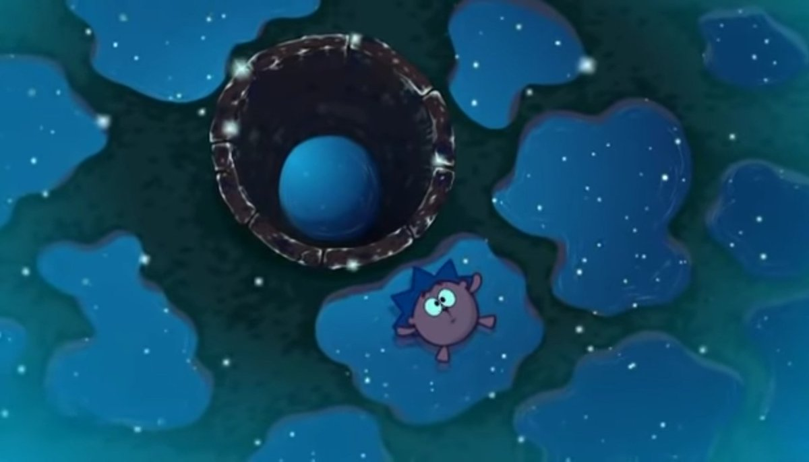

Данная серия иллюстрирует игру в "фанты", где Ежику выпадает задание побыть в лесу без никого некоторое время. Когда он оказывается в лесу, то сильно пугается и убегает в неизвестном направлении. Падая в колодец, он испытывает как моральную (отсутствие помощи и страх), так и физическую боль (холод). Когда же ему все-таки удается вылезти, он испытывает умиротворение и уединение с природой, то есть видит мир другими глазами, где нет людей и их зла. Кроме этого, после выхода из колодца, когда он рассказывал своим друзьям о неожиданном приключении, Крош пытался перебить его и рассказать все подробности сам, хотя не разу не бывая в этой ситуации. Когда до него донесли мысль, в конце серии он отправляется сам в лес, дабы испытать то самое чувство, которое испытал сам Ежик.
 Серия показывает, что иногда "без никого" лучше испытать воздействие природы на человека. Именно, когда мы одни, можем прочувствовать то самое умиротворение, которое испытал и Ежик. Все это надо видеть своими глазами.